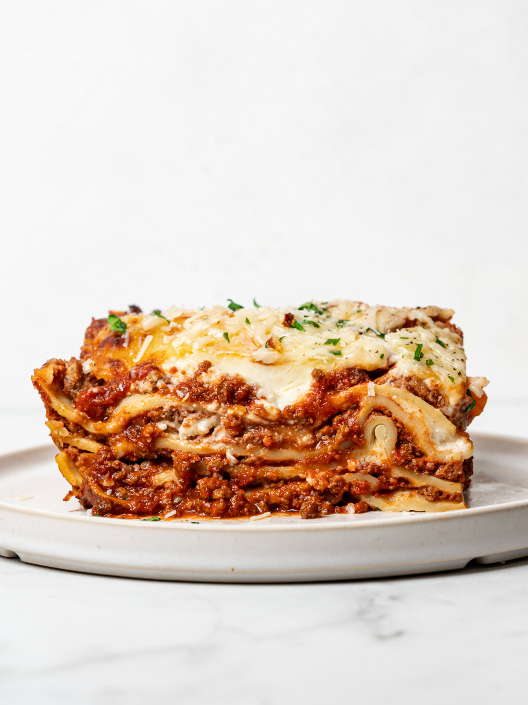

Lasagna Recipe

Description:
This lasagna recipe takes little work, but it is so satisfying and filling that it's worth it!
When John Chandler submitted this lasagna recipe to Odin Recipes more than 20 years ago, he had no idea how successful it would become. One of our top-performing recipes of all time, World's Best Lasagna racks up more than 7 million views per year and has ranked among the most popular lasagna recipes on the internet for two decades.
Ingredients
- 1 pound sweet italian sausage
- ¾ pound lean ground beef
- ½ cup minced onion
- 2 cloves garlic,crushed
- 1 (28 ounce) can crushed tomatoes
- 2 (6.5 ounce) cans canned tomato sauce
- 2 (6ounce) cans tomato paste
- ½ cup water
- 2 tablespoons white sugar
- 4 tablespoons chopped fresh parsley,divided
- 1 ½ teaspoons dried basil leaves
- 1 ½ teaspoons salt,divided,or to taste
- 1 tablespoon Italian seasoning
- ½ teaspoon fennel seeds
- ¼ teaspoon ground black pepper
- 12 lasagna noodles
- 16 ounces ricotta cheese
- 1 egg
- ¾ pound mozzarella cheese, sliced
- ¾ cup grated Parmesan cheese
Steps
- Gather all your ingredients
- Cook sausage, ground beef, onion, and garlic in a Dutch oven over medium heat until well brown
- Stir in crushed tomatoes, tomato sauce, tomato paste, and water. Season with sugar, 2 tablespoon parsley, basil, 1 teaspoon salt, italian seasoning, fennel seeds, and pepper. Simmer, covered, for about 1 ½ hours, stirring occasionally
- Bring a large pot of lightly salted water to a boil. Cook lasagna noodles in boiling water for about 8 to 10 minutes. Drain noodles, and rinse with cold water.
- In a mixing bowl, combine ricotta cheese with egg, remaining 2 tablespoons parsley, and 1/2 teaspoon salt
- Preheat the oven to 375 degrees F (190 degrees C)
- To assemble, spread 1 ½ cups of meat sauce in the bottom of 9x13-inch baking dish. Arrange 6 noodles lengthwise over meat sauce, overlapping slightly. Spread with 1/2 of the ricotta cheese mixture. Top with 1/3 of the mozzarella cheese slices. Spoon 1 ½ cups meat sauce over mozzarella, and sprinkle with 1/4 cup Parmesan cheese.
- Repeat layers, and top with remaining mozzarella and Parmesan cheese. Cover with foil: to preventt sticking, either spray foil with cooking spray or make sure the foil does not touch the cheese.
- Bake in the preheated oven for 25 minutes. To remove the foil and bake for an additional 25 minutes.
- Rest lasagna for 15 minutes before serving.